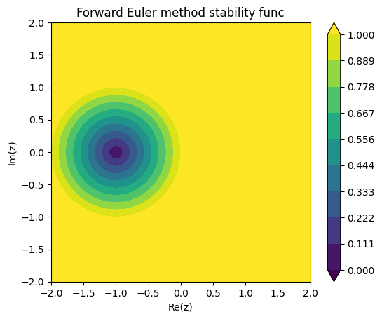
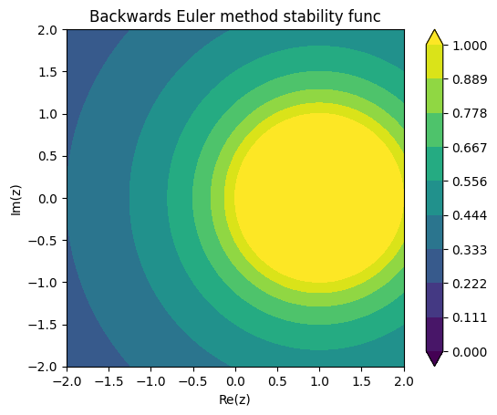

8. Ordinary differential equations II#
8.1 Recap#
Numerical libraries have plenty of methods for solving initial value problems, which they usually ask for in the standard form
i.e. as a system of first-order ODEs. They will require as inputs
the right-hand-side \(f(t, u)\),
the solution interval \([a, b]\),
and the initial state \(u_0\). Optionally, you can usually set
the relative and absolute tolerances of the method,
the order of the method (this determines the order of accuracy),
whether to interpolate the solution onto a dense grid (dense output),
and sometimes some special stopping conditions.
IVP solution methods are generally “marching” or “time-stepping” methods with 3 components,
A method to approximate / forecast the unknown \(u\) with,
A method to estimate the error of this approximation,
And a method that uses this error estimate to control parameters of the solver so as to keep the error below a user-specified tolerance.
8.2 Forecasting and (unit) local truncation error#
For describing the forecasting function of each method, we’ll use the following notation. The exact solution will be denoted \(u\), the numerical approximation of which is \(\tilde{u}\). The timesteps taken by the solver are \(\{t_i\}_{i=0}^{n}\), with the length of steps (not necessarily equal) being \(\{h_i\}_{i=0}^{n}\), where \(h_i = t_{i+1} - t_i\). The forecasting function is defined as
The simplest forecasting functions belong to the forward Euler method,
The IVP solvers usually control the error they accumulate during a single timestep, i.e. their local truncation error (LTE). This is defined as
i.e. it is the difference between the exact and the numerically predicted solution if one started the timestep from the exact solution. Its unit-length sibling is the ULTE,
One can anticipate the length of timesteps taken by the forward Euler method by considering how quickly its LTE converges as a function of \(h\). Expressing \(u(t_{i+1})\) as a Taylor series around \(t_{i-1}\), we see that the LTE is
so the ULTE is \(\mathcal{O}(h)\). So the method should converge, albeit slowly, for small enough \(h\) (though too small an \(h\) will usually lead to the amplification of roundoff error, i.e. conditioning issues).
Generally, there is no reliable way for an IVP solver to control the global error in the solution, as this depends too much on the problem itself. But under special conditions, the global error can be shown to be roughly a factor of \(h\) slower in converging to zero than the local error.
Theorem
Take an IVP solving method with constant stepsize \(h\). If its LTE satisfies
** Proof: ** Define the gloal error sequence \(\{\varepsilon\}_i\) as
There are several things we can deduce from the above expression:
convergence in the global error will be (at least) one order slower than in the local error,
as \(i \to \infty\), or, equivalently, \(t_i \to \infty\) (i.e. for long solution intervals), global error can accumulate exponentially,
however, the proof relies on uniform stepsizes, which generally won’t be true (we mostly use adaptive solvers).
Even though this proof works with uniform stepsizes, the conclusions generally hold. Let’s now look at some examples of how one would get \(\Delta \propto h^{p+1}\)-type local truncation error.
8.3 Runge–Kutta methods#
Most large numerical libraries will have a Runge–Kutta method as a default ODE (initial value problem) solver. These methods all work on the basis of matching the first given number of term’s in \(u\)’s Taylor expansion around the current timestep, for example, \(u(t_{i+1}) \approx u(t_i) + hu'(t_i) + \frac{1}{2}h^2 u''(t_i) + \mathcal{O}(h^3).\) Out of the RHS terms, \(u'\) is given thorugh the ODE itself: \(u'(t_i) = f(t_i, u(t_i))\). The next one contains \(u''\), which is a little trickier, since we have to keep in mind that \(f\) is in general a function of multiple variables (\(t\) and \(u\)), and so
The trick is to combine intermediate evaluations of \(f\), which if Taylor-expanded around \(t_i\), \(u(t_i)\), yield these terms as follows,
Now if we pick \(\alpha = \frac{h}{2}\) and \(\beta = \frac{h}{2}f(t_i, u(t_i))\), we see that
More generally, we can match even more terms in \(u\)’s Taylor expansion by making several intermediate \(f\)-evaluations. These intermediate evaluations constitute stages of a Runge–Kutta method. For \(s\) stages, the forecasting step can be summarized as (note that I’ll write \(u_i := u(t_i)\))
where the \(a_{ij}\), \(b_i\), and \(c_i\) are all parameters of the Runge–Kutta method. They are conventionally summarized in a Butcher tableau,
\(c_1\) |
\(a_{11}\) |
\(a_{12}\) |
\(\ldots\) |
\(a_{1s}\) |
|---|---|---|---|---|
\(c_2\) |
\(a_{21}\) |
\(\ddots\) |
\( \) |
\( \) |
\(\vdots\) |
\(\vdots\) |
\( \) |
\( \) |
\( \) |
\(c_s\) |
\(a_{s1}\) |
\( \) |
\( \) |
\(a_{ss}\) |
\( \) |
\(b_1\) |
\(\ldots\) |
\( \) |
\(b_s\) |
\( \) |
\(b_1^{\ast}\) |
\(\ldots\) |
\( \) |
\(b_s^{\ast}\) |
The method is called explicit if \(a_{ij} = 0\) for \(j \geq i\), in which case the \(k_i\) may be evaluated sequentially (without the need to solve a linear system). Since most operations involved in this calculation are fundamental, the dominant cost of a single step of an explicit Runge–Kutta method will be determined by the number of \(f\)-evaluations per step, which is \(s\).
Otherwise, the method is implicit. In this case, we see that to evaluate the \(k_i\), a linear system of size (at most) \(s\) by \(s\) needs to be solved, the cost of which may be comparable to the \(f\)-evaluations (depending on how complex \(f\) is).
Butcher tableaus may have an extra bottom row, containing \(b_i^{\ast}\). These are an alternative set of coefficients for making the linear combination \(u_{i+1}^{\ast} = \sum_{i = 1}^s b_i^{\ast} k_i,\) where \(u_{i+1}^{\ast}\) will typically be another estimate for \(u_{i+1}\), accurate to some \(\mathcal{O}(h^{p'+1})\), where \(p'\) is within a couple integers of \(p\). Its use is that \(|u_{i+1} - u_{i+1}^{\ast}|\) provides a convenient error estimate for the LTE and may be used to update the stepsize \(h\) (see later).
The \(a_{ij}\), \(b_i\), and \(c_i\) completely determine a Runge–Kutta method and are set in a manner similar to how we chose \(\alpha\) and \(\beta\). They have to obey a set of generally nonlinear, algebraic conditions called the order conditions. These conditions will typically leave a couple of degrees of freedom, i.e.\ there will be more parameters than constraints, and these remaining parameters are set by optimizing error constants.
Very high-order Runge–Kutta methods are not typically used because one requires an increasingly large number of stages \(s\) to satisfy the order conditions to \(p\)-th order (resulting in \(\mathcal{O}(h^{p+1})\) error, and a “\(p\)-th order” method). The following table summarizes how many stages are necessary for a \(p\)-th order method.
Stages |
Order |
|---|---|
\(s \leq 4\) |
\(p = s\) |
\( 5 \leq s \leq 7 \) |
\(p = s-1\) |
\(8 \leq s \leq 9 \) |
\(p = s-2\) |
8.4 Adaptive stepsize#
Let’s revisit how the \(i\)-th stepsize, \(h_i\), is selected in something like a \(p\)-th order Runge–Kutta method, whose LTE varies as
In practice, there are several safety factors to ensure that steps don’t get rejected. You can read about them in Numerical Recipes, Ch 17.2 “Adaptive Stepsize Control for Runge–Kutta”.
Stepsize control theory is a rich field that deals with the construction of various filters for getting rid of oscillatory behaviour in the stepsizes, which you can read about here.
8.5 Stability#
What’s the use of implicit methods if they’re generally more computationally expensive than explicit ones? Their strength lies in stability. Note that this is a different notion of stability than that of an algorithm as we discussed in Ch. 1.
For the sake of explaining what stability is, let us define the Dahlquist test equation,
Define also the simplest explicit method, the forward Euler, via its forecasting rule
Interpreted as a function of a complex variable \(z\), the locus of points in the complex plane where \(|R(z)| \leq 1\),
Question
What is the stability region of the backwards and forward Euler methods? Are either A-stable?
Since the stability region only depends on the forecasting formula of a solver, it’s not too difficult to plot it once you have the mehtod itself coded up (especially if the method is explicit).
The forward Euler method has the stability function
import numpy as np
import matplotlib.pyplot as plt
# Setting up a grid in the complex plane
z_re = np.linspace(-2, 2, 50)
z_im = z_re
z_re_grid, z_im_grid = np.meshgrid(z_re, z_im)
z = z_re_grid + 1j*z_im_grid
# Forward Euler stability function
R_forward_euler = lambda z: np.abs(1 + z)
# Backwards Euler
R_backward_euler = lambda z: np.abs(1/(1 - z))
# A handy utility function for plotting contours of R(z)
def plot(R, title):
levels = np.linspace(0, 1, 10)
fig, ax = plt.subplots(1, 1)
ax.set_aspect("equal")
ax.set_xlabel("Re(z)")
ax.set_ylabel("Im(z)")
ax.set_title(title)
cs = ax.contourf(z_re_grid, z_im_grid, R(z), levels, extend = 'both')
cbar = fig.colorbar(cs)
plt.plot()
plot(R_forward_euler, "Forward Euler method stability func")
plot(R_backward_euler, "Backwards Euler method stability func")


We see from these plots that the forward Euler method is not A-stable: it is not stable for \(\lambda h < -2\) for negative, real \(\lambda\). The backwards Euler method, however, is A-stable.
Explicit methods in general polynomial stability functions and therefore bounded stability regions, meaning that for large enough negative \(\lambda\) values, they will need extremely small stepsizes to stay stable. This will eventually lead to conditioning issues. Implicit methods mitigate this, but at the expense of having to solve a linear system at each step, which adds non-negligible computational cost.
Exercises
(Quiz 3)
Read the question before starting. You may wish to do part c) first if your answer to b) doesn’t look right.
The Butcher tableau below this exercise block describes an embedded Runge–Kutta pair.
a) Implement a function,
step(...), that takes parametersf(callable),u0(vector), andh(float), wherefis the function \(f(t, u)\) that encodes the right-hand-side of a linear ODE system,u0is \(u_0\), the solution vector at the start of the timestep (say, \(t = t_0\)), andhis \(h\), the timestep. The function should return \(u\), the solution at \(t_0 + h\) computed via the \(b\) coefficients, and \(u^{\ast}\), another estimate but evaluated using the \(b^{\ast}\) coefficients.b) Create a convergence plot (with log-log axes) of \(u\) and \(u^{\ast}\) as a function of \(h\), referenced against a known solution of a simple ODE. The x-axis should span a few orders of magnitude of \(h\) so that you can read off the convergence rate. What is it for these two estimates? Deduce the order of this embedded Runge–Kutta method (you should get two orders).
c) Write a unit test for the
step(...)function that checks whether a simple ODE is solved exactly. Explain why the ODE you came up with should be solved exactly by this Runge–Kutta method.d) Write a nice docstring for the
step(...)function.
(Quiz 3)
a) Write a function,
stepsize(...)that takes parameterserr(float), andatol(float).errwill mean a worst-offender error, the maximum of the LTE ofu.atolis an absolute tolerance. This function should returnaccept(boolean), andh(float), which are a boolean variable indicating whether the current step is accepted or not, andhis the suggested next stepsize. The function should implement the basic stepsize-updater formula described in section 7.4 above. Add a simple maximum stepsize (say,h = 100), to prevent the function from returningh = inf(this can happen when an ODE is solved exactly).b) Write a nice docstring for the
stepsize(...)function.
(Quiz 3)
a) Write a function,
solve(...)that takes parametersf,u0,t0(float),t1(float), andatol(float). The first two parameters are as above,t0andt1define the ODE’s solution range, andatolis an absolute tolerance. This function should callstep()repeatedly and update \(t \to t+h\), untilt1is reached. Each next guess for \(h\) should be obtained fromstepsize(...), and a step should only be accepted if its LTE is below the toleranceatol.b) Write a “unit test” (at this point, it’s more of an integration test) for this function. It should be similar to the one you wrote in 1.c.
c) Write a nice dosctring for
solve(...).
(Quiz 3)
Write a function that plots the stability region of this Runge–Kutta method, and explain your work. Comment on the plot. What is the maximum negative \(\lambda\) for which the solution of \(u' = \lambda u\) is stable with this method, assuming a constant stepsize of \(h = 0.01\)?
\(0\) |
\( \) |
\( \) |
\( \) |
\( \) |
|---|---|---|---|---|
\(1\) |
\(1\) |
\( \) |
\( \) |
\( \) |
\(1/2\) |
\(3/8\) |
\( 1/8\) |
\( \) |
\( \) |
\(1\) |
\(-6.5\) |
\( -2.5\) |
\( 10 \) |
\( \) |
\( b \) |
\(1/2\) |
\(1/2\) |
\( 0 \) |
\( \) |
\( b^{\ast} \) |
\( 1/6\) |
\(2/15\) |
\(2/3 \) |
\(1/30\) |